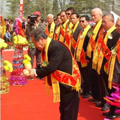

海内外苏氏宗亲陕西恭祭苏武
导读：苏姓宗亲遍布世界各地，历来重视敦亲睦族，团结友爱，并在许多国家、地区成立有宗亲联谊组织。1994年3月，“世界苏姓宗亲总会”在菲律宾正式成立，会员大会每两年召开一次……
地处关中平原的陕西省武功县13日举行壬辰年清明恭祭苏武活动，来自印度尼西亚、新加坡、马来西亚、台湾等国家和地区的3000余名苏氏宗亲参加了恭祭典礼。

苏姓宗亲遍布世界各地，历来重视敦亲睦族，团结友爱，并在许多国家、地区成立有宗亲联谊组织。1994年3月，“世界苏姓宗亲总会”在菲律宾正式成立，会员大会每两年召开一次。
陕西武功历史悠久，建县始于秦孝公十二年(公元前350年)。史料记载，苏武是坚守气节的典范。他受汉武帝派遣出使匈奴，滞留匈奴十九载，仗节牧羊，忠贞不屈。病逝后，苏武归葬故里武功。
上午10时，3000多名海内外苏氏宗亲在武功县苏武广场参加典礼。世界苏姓宗亲总会第八届理事长苏胜辉担任主祭人，印尼苏钢集团总裁苏用发、华国锋之子苏华(华国锋本姓苏)、原陕西省政协副主席苏明等担任陪祭人。在上香、奠酒、献花、恭读祭文等议程后，全体参祭人员三鞠躬。
世界苏姓宗亲总会第八届秘书长苏金丰表示，寻根拜祖是中华文化绵延不断的重要因素，苏氏宗亲来陕祭拜、缅怀先人，凝聚着对故土的深厚感情和对中华文化的认同与继承，是中华民族传统美德的延续。
从上世纪90年代开始，东南亚苏姓后裔多次组团寻根问祖。在武功县，苏姓宗亲先后捐资修缮苏武墓园和纪念馆，并捐助当地教育，修建了苏东中学、苏东第二小学校等。